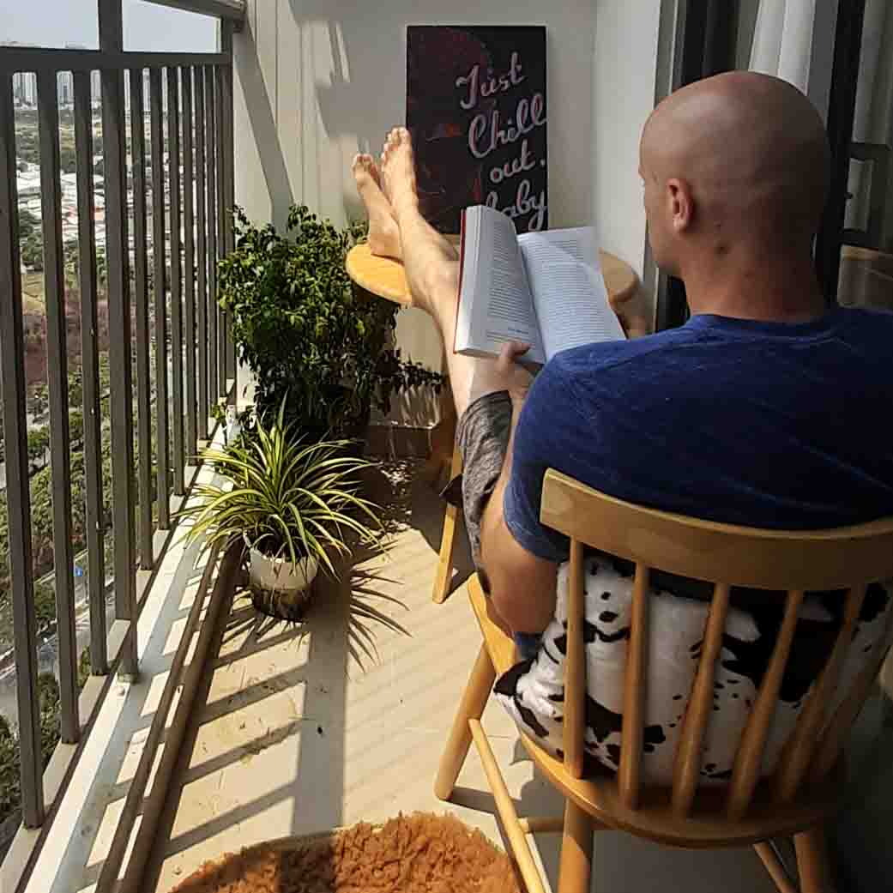
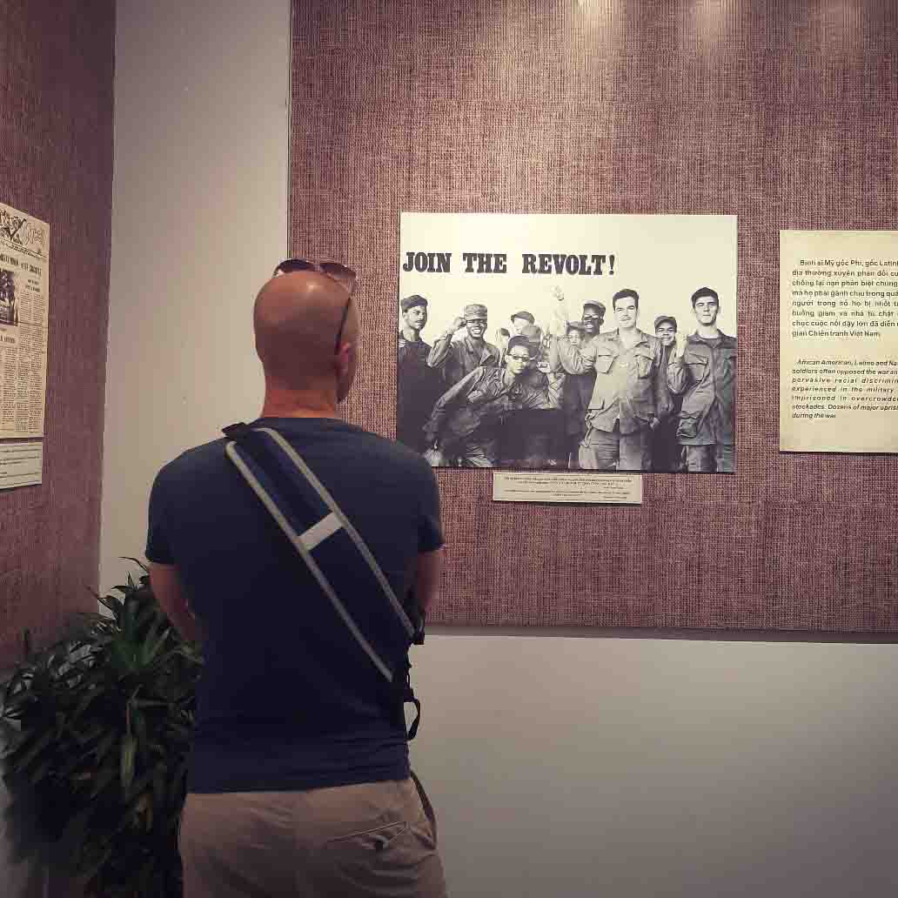

J O S H U A F L I C K E M A
Why have I decided to write?
- Clients have a constant demand to expand their vocabulary. Using this blog, my clients can improve their vocabulary, reading skills, as well as learn some grammar, and learn some of the many exceptions in English language.
Apr. 7, 2020
-Thoughts-
I have been seeing a lot of complaints on social media recently. People have been objecting to the "stay home" orders initiated by their governments and decide that they know what is best. The evidence is telling. Videos and photos of hundreds of people laying on beaches, spending time in public places, parents allowing their kids to mingle with others on the playground, etc. A lack of accountability, selfishness, and carelessness are some reasons that this virus is going to be dragged out. Many more people are going to suffer due to others ignorance and self-centeredness. It's a pity.
READ MORE...Apr. 4, 2020
-Memories-
The past couple of weeks has brought me back to my days wearing a uniform, bottled up on a submarine for weeks.....or months on end, counting down the days until i could breathe fresh air again. Memories have been flooding my mind, putting a smile on my face, Never had I thought that spending time on submarines would condition my mind for anything in my life post Navy.
READ MORE...Mar. 28, 2020
-Memories-
If you haven't read my blog about my gas chamber experience in bootcamp, take a look at that first! I've been wearing a mask in public for the past two weeks or so. It isn't always comfortable, but it is necessary in this era. Many people however, laugh it off, make a mockery of those who wear masks, and take precautions. The mask has become a part of me. The group of people who ridicule those who wear masks are mostly foreigners here who claim that it will not protect you, it is useless. Those foreigners exacerbate the issues we are already dealing with. As expats, we are viewed as a problem, carriers of the virus (as I mentioned in a previous blog). By not wearing a mask, we are solidifying this stereotype and enforcing the discrimination which we are up against.
READ MORE...Mar. 21, 2020
-Thoughts-
Not long ago I wrote a piece on our future plans and how many things I am looking forward to experiencing this year. Three weeks ago, I was filled with emotion! I was thrilled and impatient about what was to come. Yesterday evening I had a look at that list and crossed out everything on it. From Elena's birthday trip to Phu Quoc(which should be happening on Monday), to relocating to Bali, and the filming of this TV show(it is still going to happen, just delayed a month or so). Everything has been either called off or pushed back until further notice. For a few, it took the wind out of my sails, mentally.
READ MORE...Mar. 17, 2020
-Memories-
Yesterday I went to the gym for the last time until only god knows how long. The place was a ghost town, but like any decent human being, I took some precautions and wore my mask out of consideration for others.
READ MORE...Mar. 13, 2020
-Thoughts-
How do you measure your success, development and progress the things you do? How do you define success? There are an infinite number of answers to this question due to cultural differences, the ways we were brought up, different generations and more. I had a lengthy discussion with a client of mine today and I'm sure we could have gone on talking about it for hours. Our talk stirred up some memories of my grandfather and his version of success.
READ MORE...Mar. 6, 2020
-Thoughts-
The photograph above is empowering to say the least. It hypnotized me and left a plethora of questions running through my mind on repeat. It pushed me to reflect on who I am, the things I have done, the choices I have made, and why I am who I am now. What side do you take? Do you align yourself with a group, faction, or party based on your principles and values, or lean in another direction because it is the popular, hip, comfortable, easy, or “acceptable” path to follow?
READ MORE...Mar. 2, 2020
-Future-
I am very much looking forward to the next few months! I have so many plans for traveling, friends from the USA visiting, and something epic that everyone will be able to watch from the comfort of their homes, broadcast on their televisions in the very near future! I can't say much about it due to disclosure forms and whatnot, but it is going to be a unique, and cool experience to say the least! So many things are happening in the next months, it makes it hard to believe that everything will go according to plan.
READ MORE...Feb. 25, 2020
-Traveling-
I made this video to help those who deny themselves opportunities because they believe it's to travel impossible due to expenses without knowing the facts, without doing research. Here, I break things down at the cheapest for a budget vacation
WATCH THE VIDEO...Feb. 23, 2020
-Memories-
One of the reasons I started this blog is to share my traveling experiences and to show people that there is another world out there, outside of the microscopic and comfortable bubble we call "home". Traveling has done so much for me! It has destroyed some silly stereotypes which were embedded in my mind at a young age. I firmly believe that we all need to travel and take in new cultures, perspectives, and places in order to broaden our views on life, in turn making us more accepting, understanding of others, and tolerant of things and ways which we define as not "the norm".
READ MORE...Feb. 22, 2020
-Teaching-
One of the reasons I started this blog is to share my traveling experiences and to show people that there is another world out there, outside of the microscopic and comfortable bubble we call "home". Traveling has done so much for me! It has destroyed some silly stereotypes which were embedded in my mind at a young age. I firmly believe that we all need to travel and take in new cultures, perspectives, and places in order to broaden our views on life, in turn making us more accepting, understanding of others, and tolerant of things and ways which we define as not "the norm".
READ MORE...Feb. 21, 2020
-Memories-
Yesterday, I had a meeting with a client and the theme we discussed was memories and childhood. As usual, we went over vocabulary and some grammar which we then applied to our discussion. Our memories are not always bright and happy, right? From time to time those negative experiences can creep back from the darkest depths of our minds and put us in a "mood",or even worse, those memories and experiences can influence the way we live our lives today.
READ MORE...